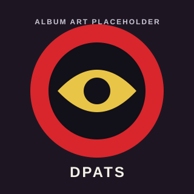

Your browser does not support the canvas tag.
Your browser does not support JavaScript.

Don't Pick at the Scabs
Arcade
STREAM THE ALBUM
SPOTIFY
APPLE MUSIC
YOUTUBE
LOADING…
For the best experience, open in Safari or Chrome.
OK
STREAM THE ALBUM
SPOTIFY
APPLE MUSIC
YOUTUBE